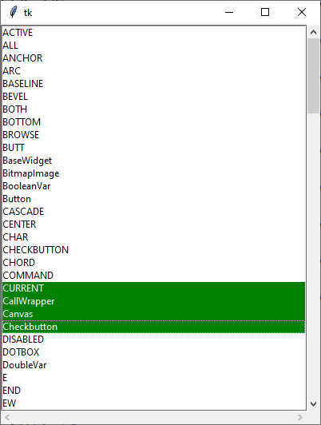
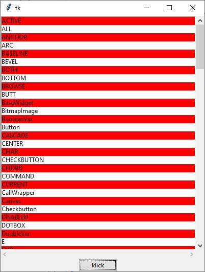

tk.Listbox
tk.Listbox erzeugen
lb = tk.Listbox(parent, Optionen)
| Optionsname | Beschreibung |
|---|---|
| allgemeine tk-Widget-Optionen | |
| background | Normale Hintergrundfarbe |
| disabledforeground | Vordergrundfarbe, wenn das Widget den Status tk.DISABLED hat |
| exportselection | tk.YES: Ausgewählter Text kann per
STRG-C ins Clipboard exportiert werden (default) |
| highlightbackground, highlightcolor, highlightthickness | Einstellungen für den Highlightrahmen |
| selectbackground | Hintergrundfarbe, wenn Elemente ausgewählt werden |
| selectborderwidth | Rahmenbreite, wenn Elemente ausgewählt werden |
| selectforeground | Vordergrundfarbe, wenn Elemente ausgewählt werden |
| setgrid | tk.YES: Widget verändert seine Größe in Vielfachen der Zeichen- oder Zeilengröße |
| spezielle tk.Listbox-Optionen | |
| activestyle | 'dotbox', 'none' oder 'underline', beschreibt, wie aktivierte Elemente dargestellt werden sollen |
| height | Höhe der Listbox in Zeilen |
| listvariable | Inhalt der Listbox als Liste. Geänderte Werte werden von der Listbox übernommen. |
| selectmode | Möglichkeiten der Auswahl:
tk.SINGLE: Nur eine Zeile kann ausgewählt werden,
tk.BROWSE: nur eine Zeile kann ausgewählt werden, diese kann aber verschoben werden,
tk.MULTIPLE: Mehrfachauswahl, kann getoggelt werden oder
tk.EXTENDED: Mehrfachauswahl |
| state | tk.NORMAL oder tk.DISABLED |
| width | Breite in Vielfachen des Zeichens 0 (Null) |
tk.Listbox kennt außerdem die Standardoptionen: borderwidth, cursor, font, foreground, justify, relief, takefocus, xscrollcommand und yscrollcommand
Das folgende Programm stellt eine Listbox vor und reagiert auf Auswahl. Der Inhalt der Listbox ist der Inhalt des Moduls tkinter.
import tkinter as tk
from tkinter import ttk
class A(tk.Tk):
def __init__(self):
super().__init__()
self.geometry('400x500')
self.grid_columnconfigure(0, weight = 1)
self.grid_rowconfigure(0, weight = 1)
self._createWidgets()
def _createWidgets(self):
self.lbvar = tk.StringVar(value=dir(tk))
self.lb = tk.Listbox(self, activestyle='dotbox',
selectbackground='green',
selectmode=tk.EXTENDED,
listvariable=self.lbvar)
self.lb.grid(row=0, column=0, sticky=tk.N+tk.S+tk.W+tk.E)
self.lb.bind('<<ListboxSelect>>', self._onSelect)
# scrollbars
self.scrollY = ttk.Scrollbar(self, orient=tk.VERTICAL,
command=self.lb.yview)
self.scrollY.grid(row=0, column=1, sticky=tk.N+tk.S)
self.scrollX = ttk.Scrollbar(self, orient=tk.HORIZONTAL,
command=self.lb.xview)
self.scrollX.grid(column=0, row=1, sticky=tk.W+tk.E)
self.lb['xscrollcommand'] = self.scrollX.set
self.lb['yscrollcommand'] = self.scrollY.set
def _onSelect(self, event):
selectedRows = self.lb.curselection()
print('{')
for lineNum in selectedRows:
print('selected:', lineNum, self.lb.get(lineNum) )
print('}')
if __name__ == '__main__':
window = A()
window.mainloop()Listbox-Methoden
Indextyp:
- Zahl: numerischer Index der Reihe, startet mit 0
active: Das Element mit der Positionsmarkierung. Die Positionsmarkierung ist nicht das Highlight. Die Darstellung dieser Positionsmarkierung kann mit der Optionactivestyleangepasst werden und ist nur sichtbar, wenn die Listbox den Eingabefokus hatanchor: Ankerpunkt bei Auswahlend: das letzte Element in der Liste, oder eine gedachte Position nach dem Ende der Liste@x,y: Das nächste Element zur Pixelposition
| Funktion | Parameter | Rückgabewert | Beschreibung |
|---|---|---|---|
| lb.activate(index) | index: Indextyp | - | Wählt eine Zeile per index aus |
| lb.bbox(index) | index: Indextyp | 4-Tupel | Gibt ein Rechteck zurück, der die beschriebene sichtbare Zeile umfasst, oder None |
| lb.cget(…) | Siehe Konfigurationsmethoden | ||
| lb.configure(…) | Siehe Konfigurationsmethoden | ||
| lb.curselection() | - | Tupel | Gibt ein Tupel zurück, das alle aktivierten Zeilennummern umfasst |
| lb.delete(first, last=None) | first, last: Indextyp | - | Löscht von first bis last einschließlich. Ohne last wird nur first gelöscht |
| lb.get(first, last=None) | first, last: Indextyp | Tupel | Gibt den Text der Zeilen first bis last zurück, oder nur first |
| lb.index(i) | i: Indextyp | - | Positioniert die Liste so, dass nach Möglichkeit Zeile izuoberst steht |
| lb.insert(index, *elements) | index: Indextyp, *elements: Liste von Elementen | - | Fügt die Elemente vor dem index an |
| lb.itemcget(index, option), lb.itemconfigure(index, option=value, …) | index: Indextyp, option: eine sich auf Zeilen beziehende Option | Wert der Option | Fragt die Zeilenoption ab oder setzt sie. Zeilenoptionen sind: background, foreground, selectbackground, selectforeground |
| lb.nearest(y) | y: Y-Koordinate | Index | Fragt den Index der Zeile ab, die am nächsten zu y liegt |
| lb.scan_dragto(x, y), lb.scan_mark(x, y) | x, y: Koordinaten | - | Scrollen der List durch Bewegen mit der Maus: Mausknopf wird an scan_mark(…) gebunden, <Motion> an scan_dragto(…) |
| lb.see(index) | index: Indextyp | - | Positioniert die Liste so, dass index zu sehen ist |
| lbox.selection_anchor(index) | index: Indextyp | - | Legt den Auswahl-Anker fest, ein Index, der als Referenz für weitere Auswahl herangeogen wird. Dieser Anker kann als Index per tk.ANCHOR referenziert werden |
| lb.selection_clear(first, last=None) | first, last: Indextyp | - | Deselektiert von first bis last einschließlich |
| lb.selection_includes(index) | index: Indextyp | 1 oder 0 | Gibt 1 zurück, wenn die Zeile index aktuell selektiert ist |
| lb.selection_set(first, last=None) | first, last: Indextyp | - | Wählt alle Zeilen von first bis last einschließlich aus |
| lb.size() | - | Zahl | Gibt Anzahl der Zeilen zurück |
| lb.xview() | - | - | Verbindung mit command der horizontalen Scrolleiste |
| lb.xview_moveto(fraction) | fraction: 0…1 | - | Scrollt horizontal zur relativen Position fraction |
| lb.xview_scroll(number, what) | n: Zahl, what:tk.UNITS oder tk.PAGES | - | Scrollt Listbox links/rechts um n what. |
| lb.yview() | Wie lb.xview() | ||
| lb.yview_moveto(fraction) | Wie lb.xview_moveto(fraction) | ||
| lb.yview_scroll(number, what) | Wie lb.xview_scroll(number, what) | ||
Das folgende Programm färbt nach Knopfdruck jede zweite Zeile der Listbox rot ein:
import tkinter as tk
from tkinter import ttk
class A(tk.Tk):
def __init__(self):
super().__init__()
self.geometry('400x500')
self.grid_columnconfigure(0, weight = 1)
self.grid_rowconfigure(0, weight = 1)
self._createWidgets()
def _createWidgets(self):
self.lbvar = tk.StringVar(value=dir(tk))
self.lb = tk.Listbox(self, activestyle='dotbox',
selectbackground='green',
selectmode=tk.MULTIPLE,
listvariable=self.lbvar)
self.lb.grid(row=0, column=0, sticky=tk.N+tk.S+tk.W+tk.E)
# scrollbars
self.scrollY = ttk.Scrollbar(self, orient=tk.VERTICAL,
command=self.lb.yview)
self.scrollY.grid(row=0, column=1, sticky=tk.N+tk.S)
self.scrollX = ttk.Scrollbar(self, orient=tk.HORIZONTAL,
command=self.lb.xview)
self.scrollX.grid(column=0, row=1, sticky=tk.W+tk.E)
self.lb['xscrollcommand'] = self.scrollX.set
self.lb['yscrollcommand'] = self.scrollY.set
ttk.Button(self, text='klick', command=self._onclick).grid(row=2)
def _onclick(self):
for index in range(0, self.lb.size()):
if index % 2 == 0:
self.lb.itemconfigure(index, background='red')
if __name__ == '__main__':
window = A()
window.mainloop()Virtuelle Ereignisse
tk.Listbox kennt das virtuelle Ereignis '<<ListboxSelect>>' -- ein Element wird selektiert.